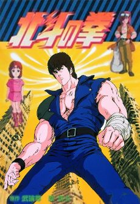
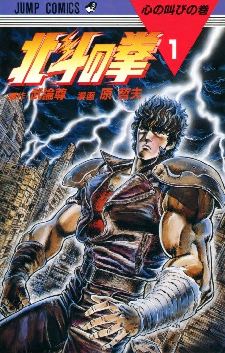

Anime
Manga1984 · Action, Drama, Sci-Fi
Fist of the North Star
北斗の拳
AniList7.6
Animeter—
2 seasons152 ep
MangaUnclear
Anime finished. Where does the manga pick up?
StatusUnclear
The first series covers up to chapter 136; Fist of the North Star 2 ends with the Asura arc, and the post-Asura chapters were never adapted.
1136245 end
Fist of the North Star